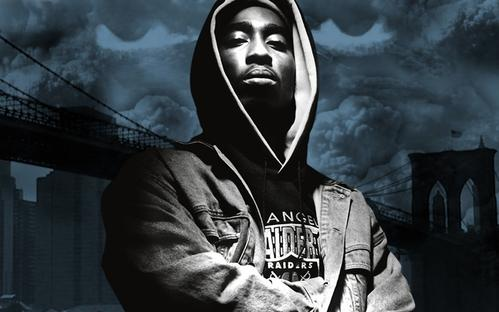

>
2Pac
2Pac图派克
图派克（2Pac，1971年6月16日–1996年9月13日），原名图派克·阿玛鲁·夏库尔，美国说唱歌手、演员。
拥有超过7500万的全球唱片销量纪录，使他成为有史以来最畅销的嘻哈音乐艺术家。
重要事件
- 1991年发表了他的第一张个人专辑《2Pacalypse Now》
- 1993年发布第二张专辑《 My
- N.I.G.G.A.Z.》，并且与2004年的统计其销量达到1366000张，达到白金唱片认证。
- 并在同年因图派克因为和在酒店房间的女人被控性虐待.
- 1995年2月7日，法院宣判2Pac在性侵犯案件中罪名成立，2pac因此而判监4年的时间，但图派克坚决否认他有任何不当的行为。
- 在判决的前一天，图派克在曼哈顿的一个录音室大厅被枪击五次。
- 枪案发生后，图派克事后怀疑是B.I.G，吹牛老爹和安德烈哈瑞尔杀人未遂. 除了他在说唱界的对手克里斯托弗·华莱士（B.I.G）之外，图派克还怀疑是他的前朋友沃克. 这开始了长期性的东西岸说唱手世仇。
- 1995年3月发行专辑《Me Against the World》
- 1996年2月13日发行《All Eyez on Me was》专辑
- 1996年9月7日位于拉斯维加斯被枪杀
成就和荣誉
在一个2005年发起的滚石杂志的投票，图派克被命名为“历史上100个不朽艺术家”排名86位。他在MTV排名在所有时代最伟大的MCS列表2号。 图派克在2002年加入名人嘻哈厅。
2003年，MTV的 "22 Greatest MCs"的倒计时上市Shakur为“1号MC”，由观众投票产生。
2004年VIBE杂志民调显示，图派克被评为“历史上最伟大的说唱歌手”。
2008年，在摇滚名人堂的全国的营业记录协会承认他是一个很有影响力的艺术家并增加了他在决定性的200人名单中。
2010年美国国家录音保存委员会增加了《Dear Mama》，美国国家录音保存委员会评价这首歌“非常动人并且对他自己的母亲以及那些在毒瘾、贫穷和社会漠视状态下奋而求生存的母亲们做出了最好的致敬。”
生活照
